1. Introduction
1.1. Contexte
Ce document est à la fois un cours et un TD (Travail Dirigé) d'université. Il est destiné à des débutants. Il utilise les sources suivantes :
Références :
- Introduction au langage Java ;
- Exploiter une base relationnelle avec l'écosystème Spring ; Nous noterons ces références respectivement [ref1] et [ref2]. La source [ref1] est ancienne (2002) mais suffisante pour ce document où elle n'est utilisée que pour sa présentation de la syntaxe du langage Java et de ses actions élémentaires. Le reste nécessaire à la réalisation du TD est présenté dans ce document dans des chapitres intitulés [Cours]. Ces chapitres proviennent directement de [ref2] (2015) et ont été parfois simplifiés.
L'objectif du document est d'enseigner le langage Java dans une optique professionnelle. Pour cette raison, nous nous appuyons fortement sur le framework Spring [http://spring.io/] très utilisé dans le développement JEE (Java Enterprise Edition). Logiquement, ce cours devrait être suivi par un cours JEE. C'est le cas à l'Istia (université d'Angers). JEE est la principale source d'emplois actuellement (novembre 2015) pour les jeunes développeurs Bac+5. Il y a beaucoup d'autres technologies que Spring dans le monde JEE. Spring a l'avantage d'être compréhensible et surtout d'apporter de bonnes pratiques de codage réutilisables en dehors de l'écosystème Spring. C'est ce qui explique son choix ici.
Ce TD est utilisé depuis plus de 10 ans et a évolué avec les technologies. Il est suivi (à l'IstiA) d'un TD JEE [Introduction à Java EE]. Ce dernier TD date de 2012 (on est ici en 2015) et mériterait d'être rafraîchi. Il présente l'orthodoxie JEE au travers du framework web JSF2 (Java Server Faces) et les EJB3 (Enterprise Java Bean). Mis bout à bout, ces deux TD ont permis à de nombreux étudiants de décrocher des stages JEE en ESN (Entreprises de Services Numériques) et de s'y faire embaucher dans la foulée.
On ne trouvera pas dans ce document, une présentation formelle de toutes les facettes de Java. Au fil des ans, le comportement des développeurs juniors face à un problème a beaucoup évolué. Désormais, ils utilisent quasi systématiquement Internet pour trouver des bouts de code qui mis bout à bout font un programme. Si on leur fournit un cours, ils l'utilisent assez peu et préfèrent de nouveau aller sur Internet. Dubitatif au départ sur cette façon de travailler, j'ai quand même été étonné des résultats obtenus. Ainsi des étudiants faibles réussissaient à produire des programmes qui marchaient alors que sans l'aide d'Internet ils n'y seraient probablement pas arrivés. Je m'appuie désormais sur cette façon de travailler.
Des bouts de code ne donnent pas une vue d'ensemble de l'architecture d'une solution et c'est l'un des objectifs de ce document que de donner celle-ci. Les étudiants font ce TD comme un TP, en autonomie. Il n'y a pas de cours magistral. Il y a un planning qui leur donne l'état d'avancement attendu d'eux au fil des séances. Ils peuvent être en retard ou en avance sur ce planning. Leur avancement est vérifié par un certain nombre de validations qu'ils doivent présenter à l'enseignant. Celui-ci est présent à la fois pour leur fournir des explications lorsqu'ils en demandent et valider leur travail. Chacun va à son rythme. A la fin des 36 h alloués à ce TD, certains auront fait 50% de validations en plus que d'autres mais chacun, c'est en tout cas l'objectif, aura compris ce qu'il a fait en autonomie. Ce TD peut être fait sans l'accompagnement d'un enseignant. C'est pourquoi, il est disponible sur [https://tahe.developpez.com].
Ce document ne conviendra pas à ceux qui chercheraient un cours académique sur Java, quelque chose où on explique Java de façon progressive et structurée et où chaque détail de syntaxe est expliqué et justifié. C'est plutôt une démarche expérimentale qui est proposée ici. Il est probable que l'étudiant ne comprendra pas tout ce qui lui est proposé dans le document mais il saura probablement réutiliser son contenu à bon escient et la compréhension des détails viendra avec l'expérience.
Ce document n'est pas non plus un cours d'algorithmique. L'algorithme du TD est basique et peut être résolu par tout débutant suivant ses premiers cours d'algorithmique. Le document est centré sur l'environnement de développement professionnel en Java avec ses nombreuses bibliothèques ou frameworks et sur l'architecture du code. La plupart des étudiants que je vois passer présentent des faiblesses en algorithmique qui sont confirmées ensuite par les maîtres de stage. Donc oui, la maîtrise des algorithmes est importante mais ce n'est pas l'objet de ce cours-TD.
Enfin, ce document (décembre 2015) ne présente pas les dernières nouveautés de Java, notamment les streams et les fonctions lambda. Néanmoins, on y utilise quelques éléments du dernier JDK, le JDK 1.8 et les codes qui suivent doivent être compilés par ce JDK.
1.2. Contenu
Le chapitre 2 présente le sujet du TD, un calcul de résultats d'élections. Le problème est basique. Le chapitre 2 demande d'implémenter la solution avec deux langages C# et Java qui sont très proches. L'implémentation se fait sans classes. L'objectif est la présentation de la syntaxe de Java, de ses instructions élémentaires, de l'IDE (Integrated Development Environment) Eclipse qui sert à construire les projets Java.
Le chapitre 3 demande d'implémenter la solution du TD en Java avec des classes. L'objectif est de présenter les notions de classes, d'héritage, d'interfaces et de classes génériques. La notion de test unitaire JUnit est introduite.
Le chapitre 4 introduit les concepts qui sous-tendent les chapitres suivants :
- les architectures en couches ;
- la programmation par interfaces ;
- l'utilisation de Spring pour implémenter les deux précédents concepts ;
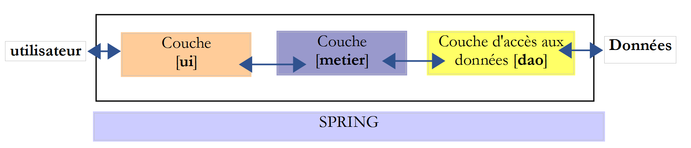
Le chapitre 5 présente le framework Spring avec quatre projets.
Le chapitre 6 présente l'API JDBC qui est une interface d'accès aux bases de données.
Le chapitre 7 implémente la couche [DAO] (Data Access Object) du TD avec l'API JDBC et Spring.
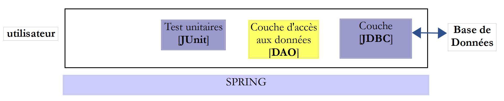
Le chapitre 8 implémente la couche [métier] du TD :

Le chapitre 9 implémente la couche [ui] du TD avec une application console :
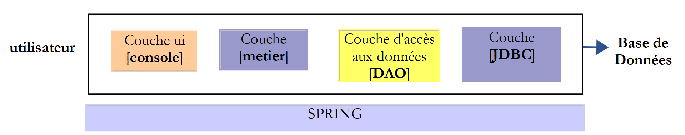
Le chapitre 10 implémente la couche [ui] du TD avec une application graphique utilisant la bibliothèque de composants Swing :
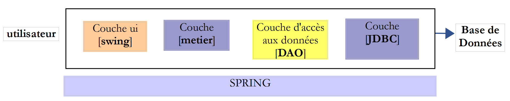
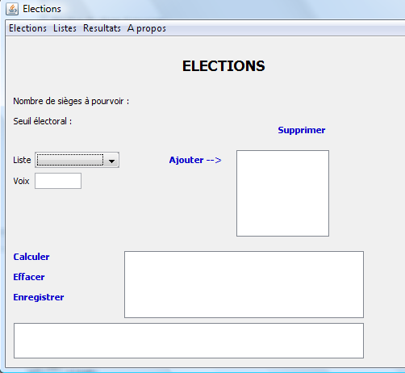
Le chapitre 11 présente la gestion des bases de données avec le framework [Spring Data], une branche de l'écosystème Spring. Elle introduit la spécification JPA (Java Persistence API) qui permet à la couche [DAO] de manipuler des objets au lieu de manipuler du SQL (Structured Query Language). L'architecture en couches évolue de la façon suivante :
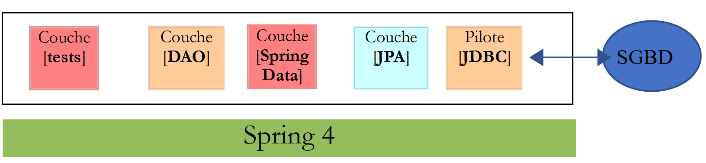
Le chapitre 12 applique le chapitre 11 en implémentant l'accès à la base de données du TD avec [Spring Data].
Le chapitre 13 montre comment exposer une base de données sur le web avec [Spring MVC] qui est une autre branche de l'écosystème Spring. L'architecture évolue en architecture client / serveur :
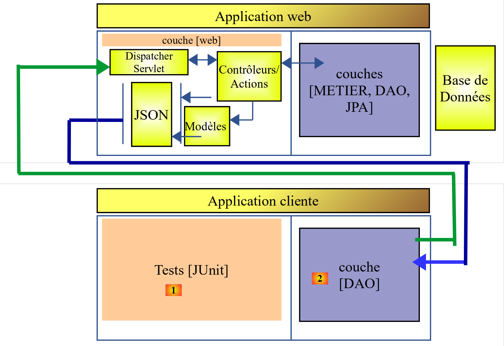
Les chapitres 14 et 15 transforment l'application du TD en application client / serveur :
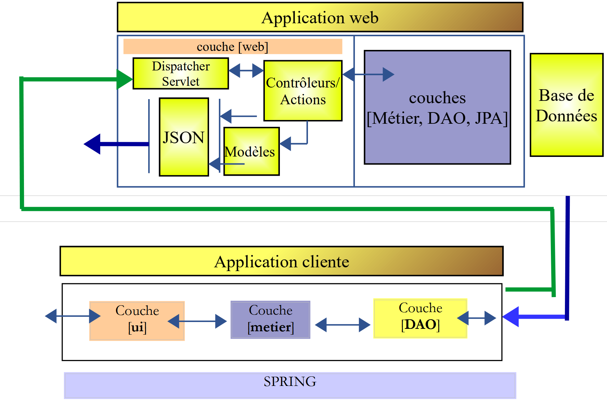
Le chapitre 16 montre comment sécuriser l'accès à une application web avec [Spring Security] une autre branche de l'écosystème Spring.

Le chapitre 17 reprend le TD et sécurise le service web des élections.
Le chapitre 18 aborde le problème des requêtes inter-domaines :
| 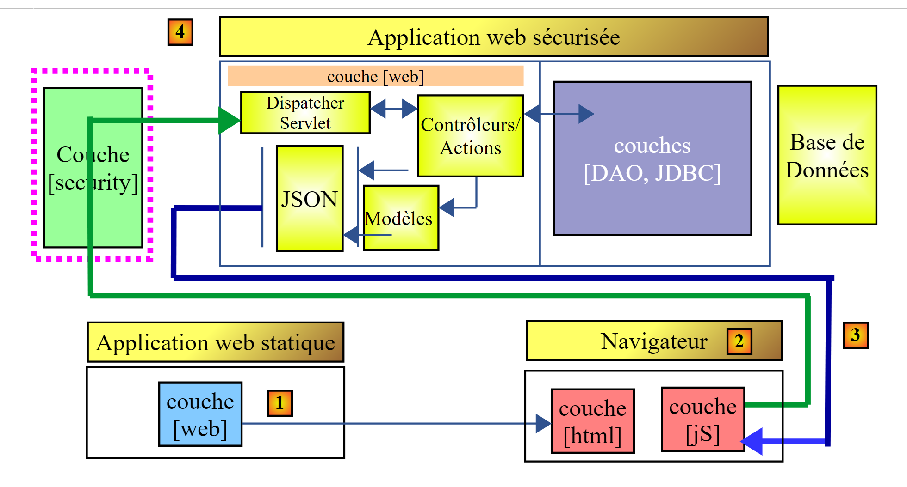 |
- en [1], une application web délivre des pages HTML / Javascript ;
- en [2], le navigateur exécute le Javascript embarqué dans les pages HTML pour interroger le service web sécurisé [3-4] ; Soit D1=http://machine1:port1 le domaine du serveur [1] et D4=http://machine4:port4 le domaine du serveur [4]. Si les serveurs [1] et [4] ne sont pas dans le même domaine [D1!=D4], alors les requêtes de [3] vers [4] sont appelées des requêtes inter-domaines. A cause de restrictions de sécurité mises en oeuvre par les navigateurs, leur mise en place peut être problématique. Nous examinerons une solution.
Le chapitre 19 met en oeuvre les requêtes inter-domaines avec l'application des élections.
1.3. Les outils utilisés
Les exemples qui suivent ont été testés dans l'environnement suivant :
- machine Windows 10 pro 64 bits ;
- JDK 1.8 (page 409) ;
- IDE Spring Tool Suite 3.6.3 (page 410) ;
- Netbeans 8.1 (page 421) ;
- navigateur Chrome (les autres navigateurs n'ont pas été utilisés) ;
- extension Chrome [Advanced Rest Client] (page 422) ;
- WampServer qui amène le SGBD MySQL et l'outil [PhpMyAdmin] pour le gérer (page 424) ; Il est important d'utiliser un JDK 1.8. Certains exemples utilisent des éléments de ce JDK. La plupart des exemples sont des projets Maven qui peuvent être ouverts indifféremment par les IDE Eclipse [https://www.eclipse.org/], IntellijIDEA Community Edition [https://www.jetbrains.com/idea/download/] et Netbeans [https://netbeans.org/]. Dans la suite, les copies d'écran proviennent de l'IDE Spring Tool Suite, une variante d'Eclipse.
1.4. Le support
Les projets Eclipse de ce document sont disponibles sur le site [https://tahe.developpez.com/tutoriels-cours/intro-java-spring/serge-tahe-introduction-au-langage-java-et-a-l-ecosysteme-spring/].
| 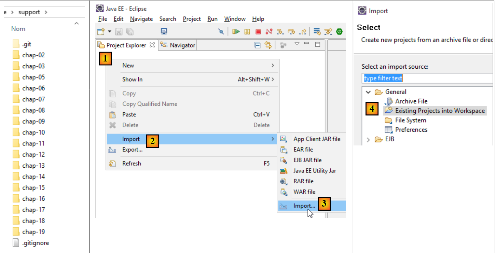 |
Pour importer les projets d'un chapitre, procédez avec Eclipse comme indiqué en [1-8] :
| 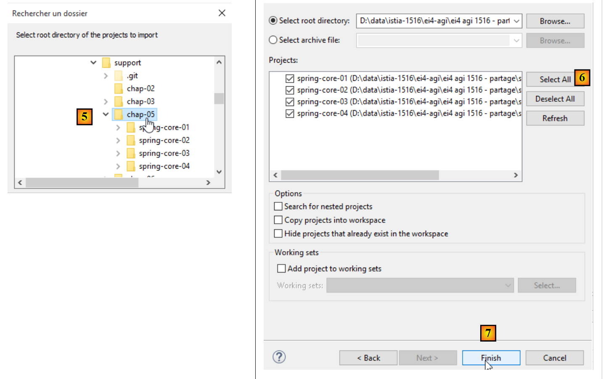 |
La plupart des projets sont des projets Maven. Si après chargement, ceux-ci présentent des erreurs, faites [Alt-F5] et suivez la procédure [9-10]. Les projets Maven sélectionnés vont être reconstruits.
 |